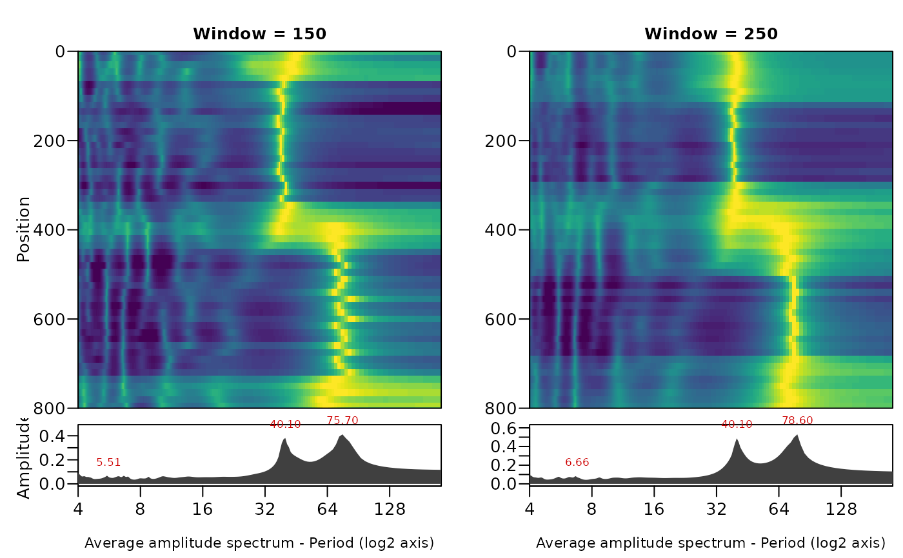

Plots the spectral image of an evolutive maximum entropy spectrum
(mesa_evolutive): one panel for every window length, side by side, with the
position (depth or time) on one axis and the period or frequency on the other, as in the
spectral image columns of log-analysis software. The spectrum of every window position is
divided by its maximum, so that the ridges of the spectral peaks show along the whole record.
The peaks of every position, the tracked ridge (track_mesa) and the average
amplitude spectrum (mesa_average) can be added.
Usage
plot_mesa_evolutive(
x,
vertical = TRUE,
xaxis = c("period", "frequency"),
period_lim = NULL,
frequency_lim = NULL,
log_scale = FALSE,
peaks = FALSE,
peak_min = 0.3,
track = NULL,
average = FALSE,
colors = NULL,
position_lim = NULL,
main = NULL,
log_axis = TRUE,
scale = "auto",
palette = "viridis",
normalise = c("window", "period", "none"),
...
)Arguments
- x
Evolutive maximum entropy spectrum to plot: the list returned by
mesa_evolutive(one or more window lengths). Required, no default.- vertical
Orientation of the plot (logical).
TRUE: the position (depth/time) is the vertical axis, increasing downwards as for a depth log, and the window lengths are panels side by side;FALSE: the position is the horizontal axis and the window lengths are stacked panels.Default=TRUE.- xaxis
Spectral axis (character):
"period"or"frequency"(cycles per unit of position).Default="period"(the first element ofc("period", "frequency")).- period_lim
Range of the period axis, in the unit of the position axis (numeric vector of length 2,
c(min, max)); used whenxaxis = "period".NULLruns from twice the sampling interval to the longest window length.Default=NULL.- frequency_lim
Range of the frequency axis, in cycles per unit of position (numeric vector of length 2); used when
xaxis = "frequency".NULLuses the full frequency range.Default=NULL.- log_scale
Kept for compatibility (logical):
TRUEis the same asscale = "log";FALSEusesscale.Default=FALSE.- peaks
Draw the spectral peaks of every window position as white points (logical, TRUE or FALSE).
Default=FALSE.- peak_min
Smallest relative power of a peak that is drawn with
peaks = TRUE(numeric, 0 to 1, power relative to the maximum of the spectrum at the same position).Default=0.3.- track
Ridge track(s) drawn as red lines on the panel of the matching window length: a
mesa_trackobject returned bytrack_mesaor a list of them;NULLdraws none.Default=NULL.- average
Draw the average amplitude spectrum of every window length (
mesa_average) beside or below its image, with the periods (or frequencies) of its three strongest peaks labelled (logical).Default=FALSE.- colors
Colours to interpolate for the colour scale (character vector of colours, e.g.
c("white", "orange", "red")); if given it overridespalette.NULLusespalette.Default=NULL.- position_lim
Range of the position (depth/time) axis (numeric vector of length 2);
NULLuses the full range of window positions.Default=NULL.- main
Overall title, drawn in the outer top margin (character);
NULLdraws none.Default=NULL.- log_axis
Draw the period or frequency axis on a log2 scale (logical): the spectrum of a cyclostratigraphic record spans several octaves, and on a linear axis the long periods take most of the plot.
Default=TRUE.- scale
Spacing of the colour breaks of the colour scale, as in all image plots of the package (character):
"quantile"(histogram-equalised),"log","sqrt","linear"or"auto"(logarithmic for mostly empty maps or values spanning more than three orders of magnitude, quantiles otherwise; seeplot_wavelet). A maximum-entropy spectrum spans many decades, so"auto"is usually logarithmic for it.Default="auto".- palette
Name of a
hcl.colorspalette for the colour scale, a character string, for example"viridis","Plasma","Inferno","YlOrRd","Spectral","Blue-Red","Zissou 1"; rungrDevices::hcl.pals()to list all 115 names. Low values get the first colour of the palette. Names of the viridis family ("viridis","magma","inferno","plasma","cividis","rocket","mako","turbo") give the colours of the viridis package, as in the wavelet plots.Default="viridis".- normalise
How the spectrum is scaled before plotting (character), one of:
"window"(the spectrum of each window position divided by its maximum, so the ridges show along the whole record),"period"(each period divided by its mean along the record, which removes the red-noise slope and shows where a cycle is stronger or weaker) or"none"(raw power).Default="window"(the first element ofc("window", "period", "none")).- ...
Not used; accepted (and ignored) so that extra arguments do not give an error.
Examples
set.seed(2)
t <- seq(0, 800, by = 2)
y <- sin(2 * pi * cumsum(1 / ifelse(t < 400, 40, 80)) * 2) + rnorm(length(t), sd = 0.4)
ev <- mesa_evolutive(data.frame(t, y), window = c(150, 250), order = 20)
plot_mesa_evolutive(ev, average = TRUE)
